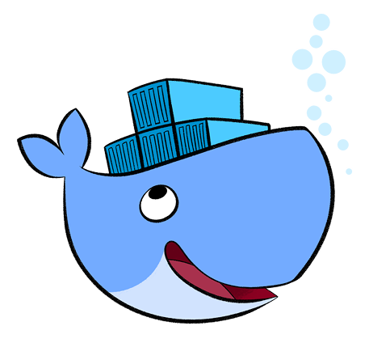
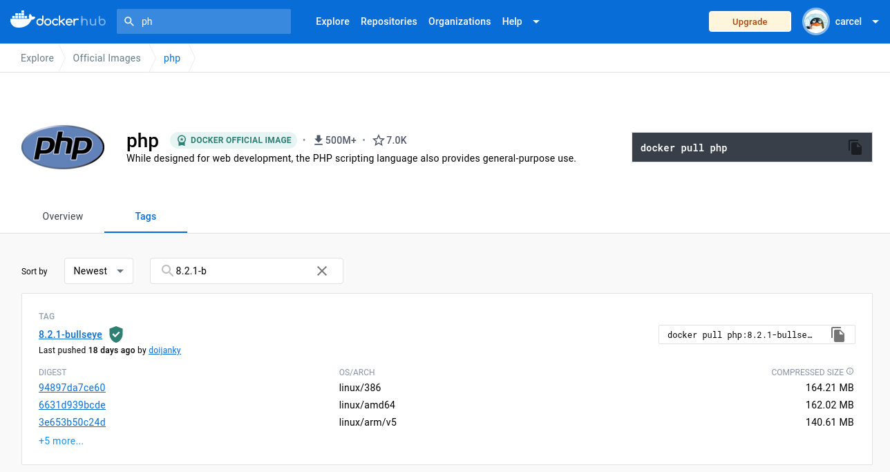

How to put an elephant in a container
-
Developing in PHP with Docker
About me
Damien Carcel
Software Lead at Akeneo
GitHub
Twitter
LinkedIn
The problem
Working on Akeneo PIM in 2015 as a support engineer:
Symfony 2 on a LAMP stack.
But...
PHP 5.3 to 5.6
MySQL 5.5 or 5.6
Optionally MongoDB (2.2 or 2.4) and Elasticsearch
Apache (2.2 or 2.4) with mod_php
The problem
Then came Akeneo PIM 2
PHP 7.*
MySQL 5.7
Elasticsearch 5.*
Apache with PHP FPM
The solution
Docker!
And some other stuff before it (Vagrant, LXC).
What is Docker

Docker is not a VM
Docker images

Let's build
Let's go further
FROM debian:bullseye RUN apt-get update && apt-get install php
A few tips
Thank you